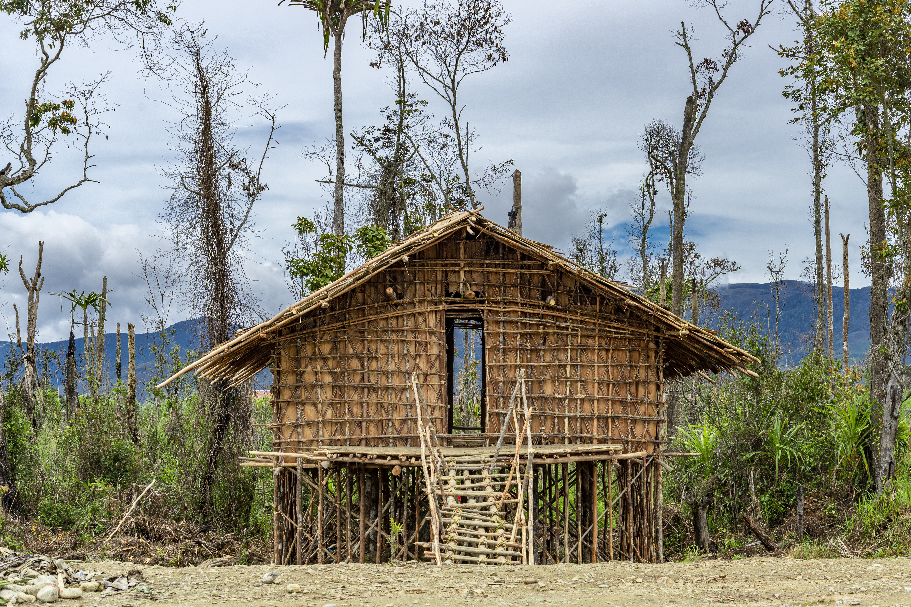
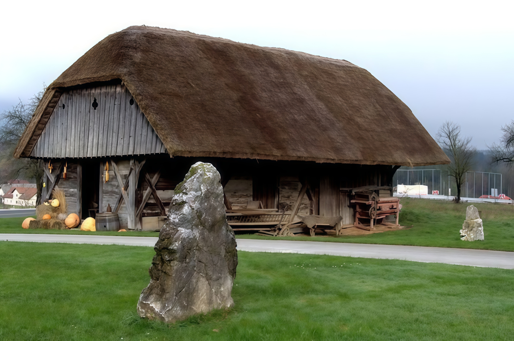

.svg)
Rumah adat Papua

Mod Aki Aksa
Mod Aki Aksa atau Rumah Kaki Seribu merupakan rumah adat suku Arfak di Papua Barat dengan ciri khas penyangga tinggi, berfungsi sebagai hunian, tempat berkumpul, serta simbol identitas dan nilai adat masyarakat Arfak.

Rumah Honai
Rumah adat suku Dani yang paling terkenal, berbentuk bulat atau kerucut dengan atap jerami. Dihuni oleh laki-laki dewasa dan berfungsi untuk menghangatkan diri di daerah pegunungan yang dingin.

Rumah Ebei
Rumah adat perempuan suku Dani, memiliki bentuk yang serupa dengan Honai namun berukuran lebih besar. Digunakan untuk kegiatan khusus kaum perempuan, seperti memasak dan mengasuh anak.

Rumah Jew
Rumah adat suku Asmat di Papua Selatan, berukuran sangat besar dan panjang. Hanya diperuntukkan bagi laki-laki yang belum menikah dan menjadi tempat upacara adat.

Rumah Wamai
Rumah Wamai Digunakan sebagai kandang ternak, terutama untuk babi. Biasanya berbentuk bundar atau persegi panjang, terbuat dari bahan alami, dan berada dalam satu kompleks dengan Honai dan Ebei.
Rumah Adat Lainnya
Koleksi lengkap rumah adat dari berbagai daerah di Indonesia yang menampilkan kekayaan arsitektur tradisional, filosofi budaya, dan nilai-nilai lokal yang terkandung di dalamnya.